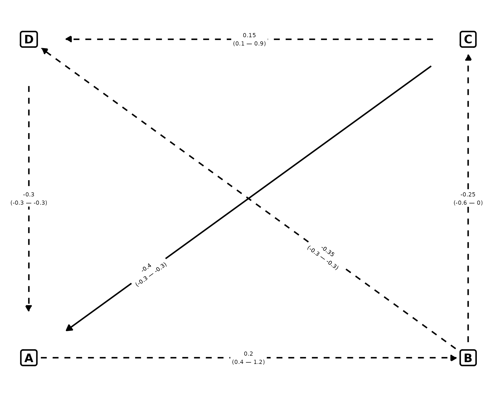

How-to-use
Lmisc.RmdPrerequisites
library(Lmisc)
library(dplyr)
library(ggplot2)First we need to build two dataframes; one containing info for the nodes and one containing for the lines
The node dataframe must contain the columns below. Each row represents a node.
nodes <- data.frame(
node_id = c("A", "C", "B", "D"),
label = c("A", "C", "B", "D"),
x = c(0, 14, 14, 0),
y = c(0, 3, 0, 3)
)Th dataframe below describes the relationship between the aforementioned nodes.
fromandtoindicate the start and the end node.curvaturetakes two values; 1 means the line should be curved and 0 that it’s a straight line.pvalue,est,ci.upper,ci.lowerare the p-value, the estimate, upper confidence interval and the lower confidence interval of the estimate. These are drawn on top of the linesvjustandhjustindicates the vertical and horizontal offset for the text on top of the linegapcontrols the gap between the boxes and the start/end of the straight line positive values increase the length of the line and negative values do the opposite. gap=0 means that the line start and ends at the exact centers of the boxes. Default value is 1. If you need granular control, specify the values for each relationship.curvature_amountcontrols the curvature of the curved paths. These follow the notation of ggplot: positive values mean a right-hand curve while negative values a left-hand curve.
edges <- data.frame(
from = c(
"A", "C", "B", "D"
),
to = c(
"B", "D", "C", "A"
),
curvature = c(0, 0, 0, 0),
pvalue = c(0.1, 0.30, 0.5, 0.5),
est = c(
0.2, 0.15, -0.25, -0.3
),
ci.lower = c(0.4, 0.1, -0.6, -0.3),
ci.upper = c(1.2, 0.9, 0.0, -0.3),
hjust = c(0.5, 0.5, 0.5, 0.5),
vjust = c(0.5, 0.5, 0.50, 0.5),
curvature_amount = c(
0, 0, 0, 0
)
)Explanation of curvature_amount
Imagine you’re walking along the path from start to end:
| Curvature Sign | Curve Direction | What It Looks Like |
|---|---|---|
| Positive (+) | Right-hand curve | Path bends to your right as you walk forward. |
| Negative (−) | Left-hand curve | Path bends to your left as you walk forward. |
| Zero (0) | Straight line | No bending; direct line. |
edges <- data.frame(
from = c(
"A", "C", "B", "D"
),
to = c(
"B", "D", "C", "A"
),
curvature = c(1, 1, 1, 1),
pvalue = c(0.1, 0.30, 0.5, 0.5),
est = c(
0.2, 0.15, -0.25, -0.3
),
ci.lower = c(0.4, 0.1, -0.6, -0.3),
ci.upper = c(1.2, 0.9, 0.0, -0.3),
hjust = c(0.5, 0.5, 0.5, 0.5),
vjust = c(0.5, 0.5, 0.50, 0.5),
curvature_amount = c(
0.2, -0.2, 0.2, -0.2
)
)
p <- plot_dag(nodes, edges, ylim = c(-2, 3.2), xlim = c(-0.2, 15), text_size = 3)
print(p)When we walk from D to A (or C
to D) with a negative value
(curvature_amount = -0.2), the curved path is left-handed.
When we walk from B to C (or from
A to B) with a positive value, the path is
right-handed (curvature_amount = 0.2).
Control of gap
We can control the length of the lines by using the gap
argument.
By using 0, we say that the lines should start from the center of the boxes. 1 is the default.
- We can assign a positive value to increase the length of the lines
- We can assign a negative value to shrink the lines
edges <- data.frame(
from = c(
"A", "C", "B", "D", "B", "C"
),
to = c(
"B", "D", "C", "A", "D", "A"
),
curvature = c(0, 0, 0, 0, 0, 0),
pvalue = c(0.1, 0.30, 0.5, 0.5, 0.5, 0.005),
est = c(
0.2, 0.15, -0.25, -0.3, -0.35, -0.4
),
ci.lower = c(0.4, 0.1, -0.6, -0.3, -0.3, -0.3),
ci.upper = c(1.2, 0.9, 0.0, -0.3, -0.3, -0.3),
hjust = c(0.5, 0.5, 0.5, 0.5, 0.3, 0.8),
vjust = c(0.5, 0.5, 0.50, 0.5, 0, 0),
curvature_amount = c(
0, 0, 0, 0,0,0
)
)
# Set the gap values
edges$gap <- c(-1, -3, -1, -3, -1,-3)
plot_dag(nodes, edges, ylim = c(-0.2, 3.2), xlim = c(-0.2, 14.2), text_size = 3)
As you can see, those relationships that have -3 as
their gap values have their length shrinken.